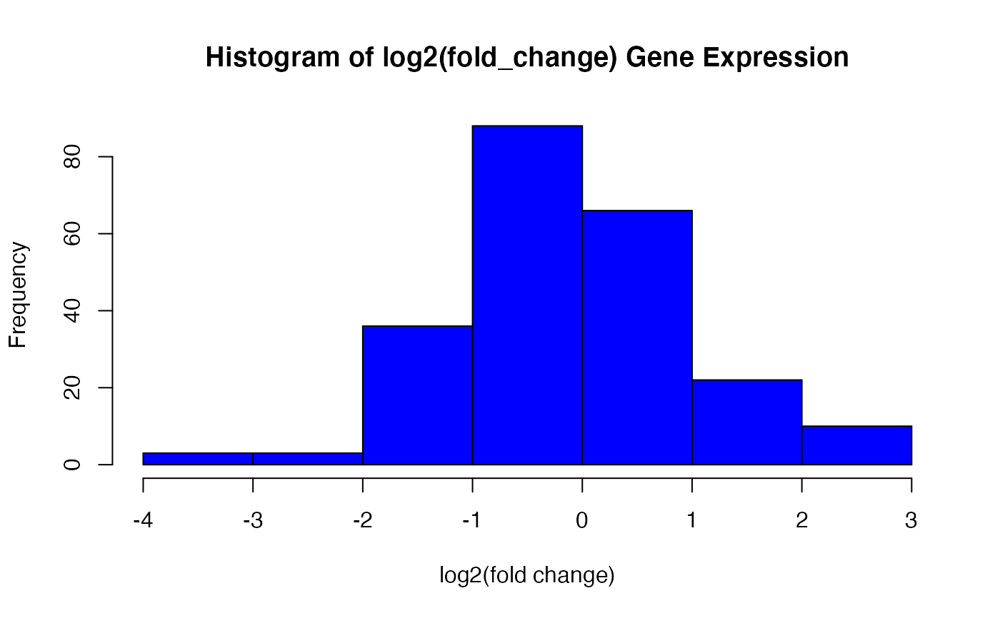

This function provides some basic information on the data set. It first provides a table of total number of significantly deferentially expressed genes. Then in runs a binomial exact test on those numbers. Lastly, it returns a basic histogram of log2 (fold change) values in order for the user to gain an understanding of the skew.
genomic_summary(data, log2, sig)
| data | name of data set |
|---|---|
| log2 | name of column with log2 values |
| sig | column name in data set that states changes were significant |
genomic_summary(data = gendata, log2 = "log2.fold_change.", sig = "significant")#> total upregulated downregulated #> ─────────────────────────────────────── #> 229 99 130 #> #> Column names: total, upregulated, downregulated #> #> Exact binomial test #> #> data: counts[2] and counts[1] #> number of successes = 130, number of trials = 229, p-value = 0.04719 #> alternative hypothesis: true probability of success is not equal to 0.5 #> 95 percent confidence interval: #> 0.5008136 0.6327822 #> sample estimates: #> probability of success #> 0.5676856 #>